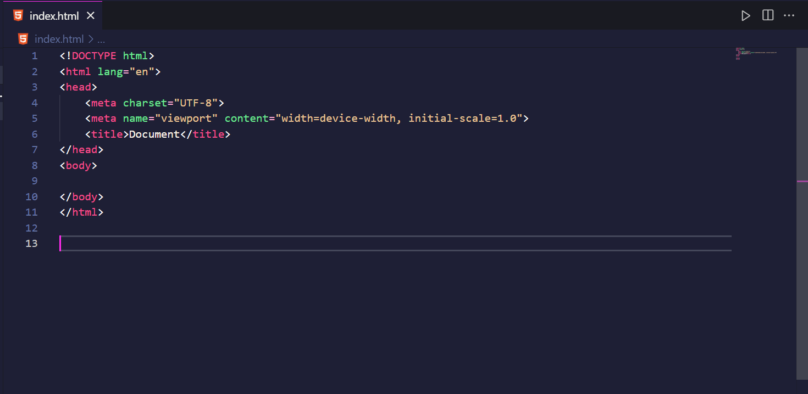

Você não precisa necessariamente nomear todos os seus arquivos HTML como “index.html”, mas há razões práticas e convencionais para usar esse nome, especialmente para a página principal de um site:
1. Página Padrão em Servidores Web:
- Comportamento Padrão: A maioria dos servidores web (como Apache, Nginx ou serviços de hospedagem) são configurados para buscar automaticamente um arquivo chamado `index.html` quando você acessa um diretório sem especificar um arquivo. Por exemplo, ao acessar `www.exemplo.com`, o servidor vai buscar o `index.html` dentro do diretório raiz e exibi-lo como a página principal.
- Evite especificar o Nome do Arquivo na URL: Se o arquivo principal for nomeado como `index.html`, você pode acessar o site digitando apenas o domínio (exemplo: `www.exemplo.com`). Se usasse um nome diferente, como `home.html`, precisaria especificar a URL completa (`www.exemplo.com/home.html`), o que é menos prático.
2. Organização e Convenção:
- Padrão da Web: Nomear o arquivo principal como `index.html` é uma convenção bem estabelecida na web. Isso facilita para outros desenvolvedores que acessarem seu projeto saber imediatamente qual arquivo é a página inicial.
- Estrutura Lógica: Se você tem um site com várias páginas, o uso de `index.html` como o ponto de entrada principal mantém a organização clara. Outras páginas podem ser nomeadas conforme sua função, como `about.html` para a página "Sobre", `contact.html` para "Contato", etc.
3. Facilidade para Sistemas de Gerenciamento de Conteúdo (CMS):
Muitos CMSs e frameworks web, como WordPress, utilizam o conceito de `index.html` ou `index.php` para gerenciar o ponto de entrada padrão da aplicação ou site. É uma prática amplamente adotada no desenvolvimento web.
Em resumo, o uso de `index.html` é uma convenção que simplifica o funcionamento do servidor e facilita a navegação para o usuário e a organização para desenvolvedores.
Aqui está a estrutura básica de um arquivo HTML:
Componentes
Essa é uma estrutura básica que pode ser expandida conforme necessário.
A maioria das tags possui uma abertura e um fechamento, onde devemos fornecer informações específicas. A seguir, listei algumas tags e suas respectivas funções:
Os atributos de tags em HTML são usados para fornecer informações adicionais sobre os elementos. Eles aparecem sempre na abertura da tag e seguem o formato atributo="valor".
Esses atributos ajudam a customizar e controlar o comportamento dos elementos HTML de acordo com o conteúdo ou interação do usuário.
Abaixo estão alguns dos atributos mais comuns, aplicáveis a diversas tags:
Atributos comuns
Exemplo: <div id="cabecalho"</div>
Exemplo: <p class="texto-destaque"</p>
Exemplo: <h1 style="color: blue; font-size: 20px;">
Exemplo: <a href="#" title="Clique aqui para saber mais">Saiba mais</a>
Exemplo: <img src="imagem.jpg" alt="Descrição" />
Exemplo: <a href="https://example.com">Visite nosso site</a>
Exemplo: <img src="foto.jpg" alt="Foto de perfil" />
Exemplo: <input type="text" placeholder="Digite seu nome" />
Exemplo: <input type="text" value="Exemplo" />
Exemplo: <button disabled>Enviar</button>
Exemplo: <a href="https://example.com" target="_blank">Abrir em nova aba</a>
Exemplo: <input type="password" />
Exemplo: <div data-user-id="123"></div>
Ela é usada para apresentar itens que seguem uma sequência específica, como etapas de um processo ou classificações.
Essa lista é utilizada para apresentar itens onde a ordem não é importante, como uma lista de compras ou características.
Representa um item de lista em HTML e é usada dentro de listas ordenadas (<ol>) ou não ordenadas (<ul>). Cada elemento <li> define um item da lista.
Um link em HTML é criado usando a tag <a> (anchor), que permite que os usuários naveguem para outra página, site ou recurso ao clicar no texto ou na imagem associada. Os links são essenciais para a navegação na web.
O atributo self não é um atributo HTML padrão, mas pode ser uma referência a como as páginas se comportam em relação a links, geralmente mencionado em contextos de segurança e navegação. O que pode estar se referindo é o atributo target na tag <a>, que determina onde o link será aberto.
O atributo blank em HTML geralmente se refere ao valor _blank do atributo target na tag <a>. Quando usado, ele indica que o link deve ser aberto em uma nova aba ou janela do navegador.
O atributo title em HTML é usado para fornecer informações adicionais sobre um elemento, geralmente exibidas como uma dica (tooltip) quando o usuário passa o mouse sobre o elemento. Esse atributo pode ser aplicado a quase todas as tags HTML.
Confira abaixo links de videoaulas sobre HTML para aprimorar seus conhecimentos e dominar essa linguagem de marcação. Aproveite os estudos!